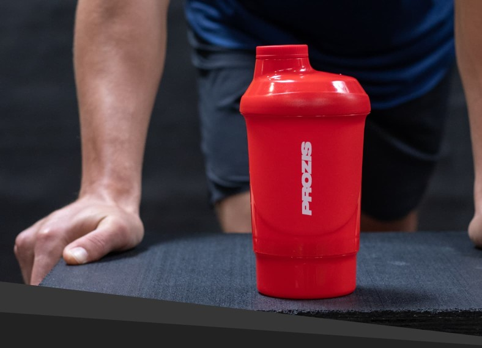

ACCESORIOS
COMBAS

hola
Descripción
El salto a la cuerda, también conocido en España como salto a la comba, es una actividad practicada como juego infantil y como ejercicio físico (especialmente como entrenamiento para algunos deportes, como el boxeo, tenis o el culturismo). El uso de las cuerdas para saltar ha sido tradicionalmente uno de los juegos favoritos de los niños. Leer mas...
SHAKERS
hola
Descripción
Las botellas de plástico son empleadas en la comercialización de líquidos en productos como de lácteos, bebidas o limpia hogares. También se emplea para el transporte de productos pulverulentos o en píldoras, como vitaminas o medicinas. Sus ventajas respecto al vidrio son básicamente su menor precio y su gran versatilidad de formas. Leer mas...